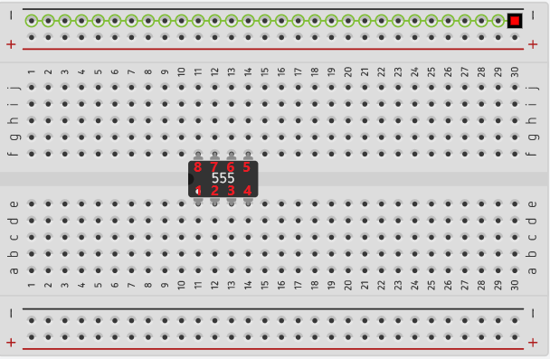
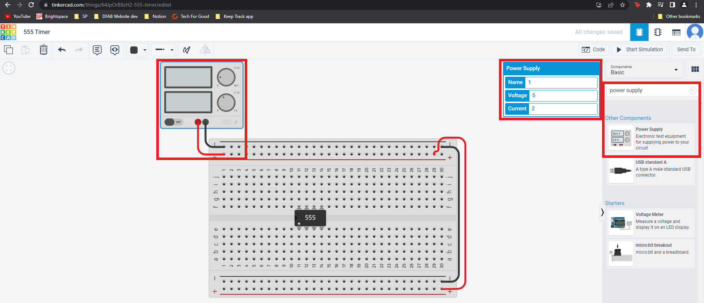
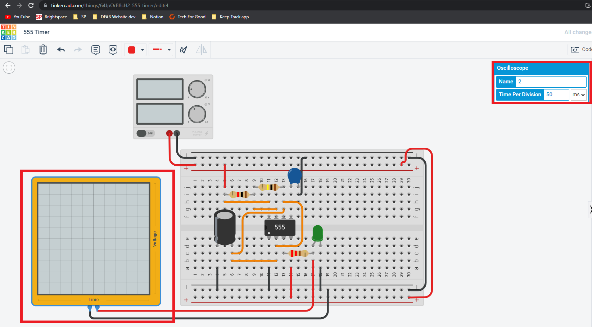

Astable 555 Timer
Also called free running or self-triggering mode does not have any stable state and it has 2 quasi stable state (HIGH and LOW).
How it Works?
It automatically interchanges between 2 states on a particular interval generating a rectangular waveform which makes the LED blink.
Time duration output of HIGH and LOW is determinded by R and C values which makes the LEDs blink faster or slower.
Works as a oscillator circuit, in which output oscillate at a particular frequency and generate pulses in rectangular wave form.
You can also find out more indepth about 555 timer and how it works by using this link here.
And there is even a video about how it works!
But first, What is TinkerCAD?
It is an online 3D modeling program that runs in a web browser. The best part about it, it's completely free!! You can create 3D models, create circuits and write coding programs. You can even start learning using their tutorials to help you get started and its great for beginners and hobbyists!
Lets get Started!
First you need to create a TinkerCAD account, go ahead and sign up!

You will then be brought to the dashboard, click into circuit and create new design.
{kind=link}
You now have a blank canvas to start designing the circuit. Click on the breadboard and move it into the canvas. You can name your breadboard if you want.

In the search bar search for 555 timer and place it into the breadboard.
{kind=link}
If you hover over the breadboard you can see a red box showing where to connect the wires and how the wires will be connected by the light green line.
{kind=link}
We want to put in the VCC and GND points first so get a black wire to represent GND and red to represent VCC. Click on the hole that you want to place and connect the GND black wire to the - symbol. do the same with the VCC red wire to the + symbol.

You will need a power supply to supply power to your circuit so search for the power supply and place it into your circuit. Connect the Positive and Negative connections from the power supply to the breadboard. DO NOT PLACE THE POSITIVE AND NEGATIVE WRONGLY YOU MIGHT BURN THE 555 TIMER CAUSING IT TO BE UNUSABLE.
{kind=link}
Then get a oscilloscope and place it into your circuit to be able to see the waveform.
{kind=link}
Prepare the other components you need for the circuit:
{kind=link}
1 - Ceramic Capacitor

{kind=link}
1 - 1Kohm Resistor (Brown, Black, Red, Gold)

1 - 100Kohm Resistor (Brown, Black, Yellow, Gold)

1 - 220ohm Resistor (Red, Red, Brown, Gold)

Using the schematic diagram as reference connect the components with wires in the bread board.

Connect the oscilloscope Positive side to R3 and Negative side to the GND.

Then play the simulator to see if its working correctly and your done!